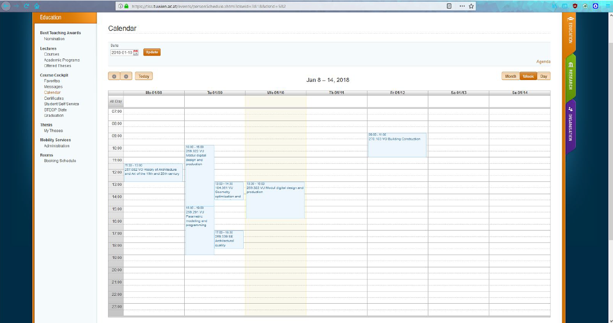
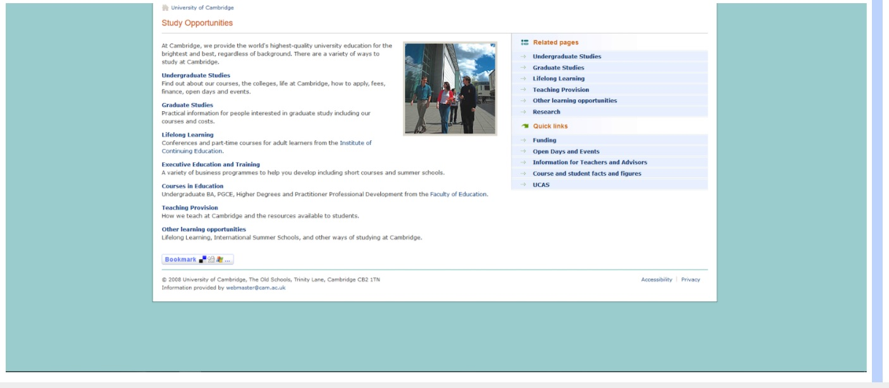

FII Assistant
Introduction - Problem Presentation
Our current student portal at FCS (FII), lacks integration with its various services for students. Students cannot login on the main page or access a dashboard-like view. The existing website does not respond to the needs of the students since a lot of the online services are non-existent - they require direct contact with the staff. Other issues include problems with the schedule and the student course selection, as not all options are displayed or optional course selection is not always clear. Furthermore, a lot of the existing course information, such as exams, documentation or even materials are not all congregated in the same place. Seeing as the university has an increasing number new students, and this is their main portal, a lot of these issues cause people to no longer access the webpage and seek information via other means, such as Facebook, and end up misinformed, or end up bothering the staff with trivial questions about things such as the schedule. Stating all of the above, it is necessary to find a solution that will overcome these issues, be it by creating a new portal that substitutes the old one, or integrating the old services into a single new one.
Abstract
Currently this technical report explains our current dilema, along with our findings and work on the subject. It is a basic guideline at most that will explore a number of existing solutions that are used as student portals, a pattern into how we will code, and produce a similar solution and finally how this solution will interact with the rest of our project. It is given that this report is still analysing a project in its early stages and only gives a glimpse of how it will progress in the future.
Table of contents
- Introduction - Problem Presentation
- Abstract
- State-of the Art
- Our solution
- Architecture
- Results, Evaluation
- Server side results
- Timetable Solution
- Future Prospects
- Comparison with other solutions
- Future work
- Conclusion
State-of the Art
If we are to consider some of the best student portals that exist, we should have a look at british universities. They’ve basically stamped out a certain design and functionality pattern for their main pages, while each of them has managed, in time, to rebuild and integrate their initial functionality, such as course scheduling or enrollment features. By having a look at student portals like Oxford, http://www.ox.ac.uk/, Manchester, http://www.manchester.ac.uk/, Cardiff, https://www.cardiff.ac.uk/ , universities have a similar design, where they combine the elements of Enrollment, Existing Students Intranet, News/Information, Business/Research and finally Site Map & Search. Having done so, this allows clear navigation through the existing services. And while some may link to some more outdated internal web-pages, having a clear cut pattern, helps solve many of existing users issues. They also have created certain levels of access for staff later on, as to allow professors to view grade students, or the creation of other services that may become necessary in the future. As such, when compared to our initial problem, we have a clear cut method of improving our current features and we have an organisation method presented to us. It is also good to note, that, while UK universities do put an accent on presentation, german/swiss uni, tend to take a more functional design, but keep much of the elements mentioned above. Below: Calendar Schedule for a week for a student.
Our solution
Our solution was the creation of a .NET application that is based on various microservices using C#. This allows us, or anyone in the future to work and create his own microservice for the existing application that adds various features and functionalities to the website.
Our current system allows us to make user accounts and stay logged in using a token system for two hours. We can see the current course list, that is attributed to our current year, and have a schedule displayed to us, based on those courses. The course list is going to be generated, by parsing the current existing webpage and adding them to a database. The same will be done with the existing schedule. Though currently there is no difference between user types, this can be added as later functionality. Strictly speaking the current solution is the bareback bones structure that can be used to later build upon other functions - since a lot of universities start of with a main solution around which they build multiple various applications using a provided model and format and the create micro-applications for them, within certain parameters. So say a new faculty is established, it will basically use a web app that is built similar to the others in order to connect to the server and have a similar formated DB, in order to be able to select what functions it further needs down the road, and from there it is set to go.
Architecture
Our application has micro-service ready architecture, which is easy to extend. The main components, as seen in the diagram below, are communicating to offer the needed functionality. There is a main server which acts as a proxy between the consumer applications (e.g. web application, other api) and the microservices exposed by our platform. These microservices communicate with the Server API by exposing simple endpoints specific to their role.
Each microservice has a well defined purpose and wraps a database for internal data storage.

The microservices we have so far implemented are: Users, Timetable and Courses. We added various class diagrams to showcase the internal structure of the application. Our goal in the process of developing the architecture was to give the code a low coupling and high cohesion by also sticking to the SOLID principles. Furthermore the implementation of various design patterns has helped the development process and offered a more efficient solution to our business needs.

Fig. Server Diagram

Fig. Class diagram - Courses

Fig. User class diagram
Results, Evaluation
Currently our application runs smoothly and collects information from the other websites of the university. Two process parse the existing information in the schedule and the existing courses and create a database that is put to use as part of the application. Since it was thought out as a modular application, we can extend its current functionality, and parse other information, having a flexible working model, that integrates old existing elements. It is secured using authentication and authorization with JWT, currently users having tokens generated for each session that lasts two hours.
Server side results
In order to implement the microservice architecture we need a structure that combines and manages communication between modules. This is represented by the server. In order to achieve these results we built the two main components of the server:
- a communication layer
- a reusable HTTP client.
The first one (communication layer) provides an endpoint to an existing client application for getting functionality that is built on the microservice layer. Also, it offers a data exchange mechanism between microservices, increasing decoupling in the way that no microservice is dependent on other microservice.
In order to implement the communication layer we composed a HTTP client. It is used for providing a generic tool that helps the server module and also the microservices to send their requests. This includes multiple types of HTTP requests (GET, POST, PUT, PATCH, DELETE).
In the end, we managed to build a server side component in a SOLID manner that is able to handle all the client requests. The workflow pattern contains requesting other microservices for providing specific data and also resolving the requests received from the microservices.
Timetable Solution
The timetable module is part of the microservice architecture designed at a project level. This module is separated from all the other modules and returns isolated data. The desired behaviour of this module is to parse the online timetable available for all the groups of students and return the data in a reusable object oriented model.
The business requirement was met by creating a parser as the core of this module which receives a timetable request with basic data like: e.g. group, year. Based on this request type and the type of response wanted (e.g. day timetable, week timetable) the parser requests the content from the online table. Then the content is parsed and is mapped into an appropriate data structure taking into account the structure from the online timetable.
After the parsing is done, the completed data structure is sent to the controller which in turn communicates with the server or other external consumers. In this way this module is completely decoupled from the other functionalities and has a single responsibility.
Future Prospects
As far as thinking goes, there are various modules that MAY use a similar pattern to the timetable solution. For example,, other various modules will be created with the similar function of parsing existing data and and return it as an object that can be part of the model. So since a lot of PDF, PPT, TXT etc, files that contain course related material, are spread across different web pages or file storages part of the main website or given access on other websites to students, it would be possible to make a lecture portal for all students to access and download course related material, to which they are given access. As such all of the existing content would need to be parsed, mapped into an appropriate format and then allowed a structure created which allows the users to interact with it, all from a single module. But this is just one of the few solutions we have touched in our discussion so there is room for change.
Comparison with other solutions
Further research is necessary at this stage due to the alpha stage of the application and lack of friendly user interface which allows us to compare the user experience between different solutions.
But it is clear that our current work is a vast improvement over how the current university website offers its services and even its basic functions. Comparing with other solutions is a tad difficult, but we can compare the current website with an existing solution from a few years ago.
This is one of the old remains, of how the Cambridge University Student Portal used to look. It has no rich features and offers the basic outline to how students could check their schedule or their courses, but nothing like the current version, of booking courses online, registering for seminaras or exams, checking notes/courses or creating your own timetable.
This old page information has been parsed and added into the new website around 2008. This is a similar process to what we are proposing. Our project does not reinvent the wheel, but basically analyses what others have done and tries to find a way to do so with a more current approach to our time. On the other hand certain universities have preferred to scrap older websites and start anew, but those are few and in-between.
Future work
As at this stage this is purely theoretical, but with the current way the application is build, we can progress in a manner of directions and create a wide variety of microservices for:
- Secretary Work - Contracts/Paperwork/PaymentsStudent Enrollment
- Scheduling Appointments
- Dissertation/Research and Thesis Work - Applying/Proposing/Referencing
- Publishing/Archiving Work
- Intranet - Professor Course Storage
- Online Exams or Assignment Submission
- Partnerships (since our university has loads of connection to companies)
- Foreign Students Portal
- ...and others
But we mentioned a wide variety of things that CAN be done. But since the required work for such an arduous task would require an entire team, having an outline of what can be done, is just as important in order to have a idea of which direction work should progress in. As the program will be developed throughout the next year, we can take our time and make various choices.
In the future we will develop a web application which will consume the REST API exposed by our solution. This web application will have a modern frontend architecture implemented using a cutting-edge JavaScript framework (Angular 5), HTML5, CSS and other libraries (e.g. JWT, Lodash).
This frontend web application would be based on the architecture scheme described below:

The communication between the frontend application and the API exposed by the server will be done by developing Angular Services which will make http requests to the endpoints exposed by the server. The web application will be a single page application with a fluid user experience and improved performance by using caching mechanisms offered by the Progressive Web Apps standard (service workers).
Conclusion
As presented earlier, the project developed this semester is only the first step towards an application which will be fully integrated in the students’ life.
By starting with a fully modular and reusable infrastructure, we can easily extend the existing platform in the future, being able to scale up to almost all requirements which might appear. The microservice-ready architecture will guarantee that at any time we will be able to migrate to fully independent microservices. This is crucial, since we might not be the ones developing this application in the future: it is easily extensible, without breaking the already existing functionality.
The next logical step in the development of this product will be to create an interactive user interface, with a rich user experience. This will require study of already existing applications in this area, to see which approach is the best when it comes to student portals. However, we will keep in mind the way our students use the portal that is available right now, and start building up a better experience from there.
In conclusion, we strive to give our colleagues at FCS a friendlier approach to all the tools provided by our faculty, in an intuitive and friendly experience.